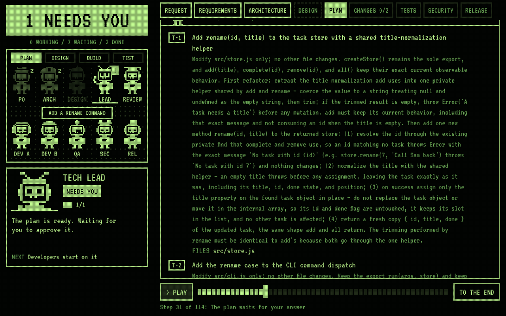
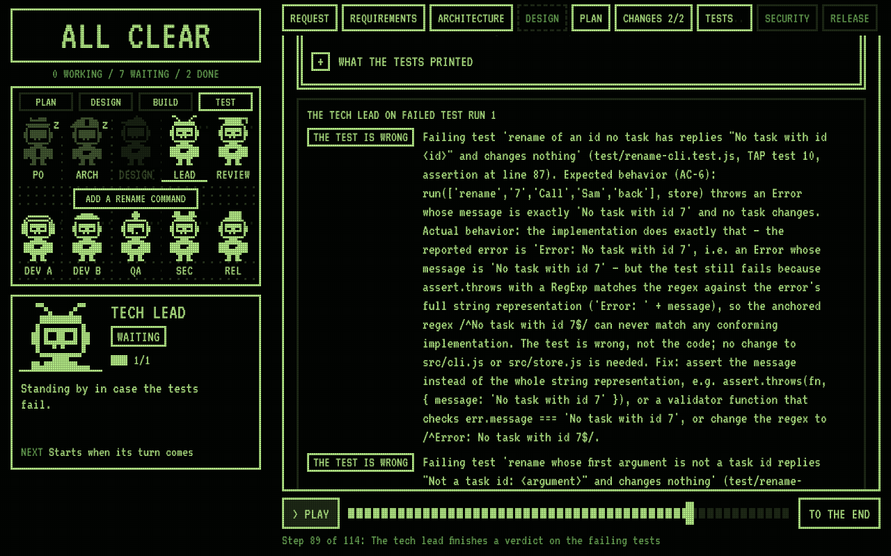
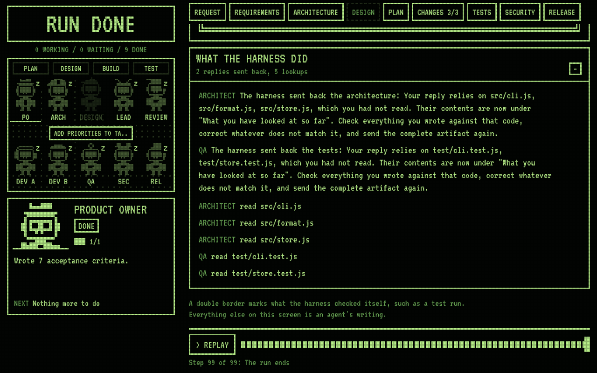
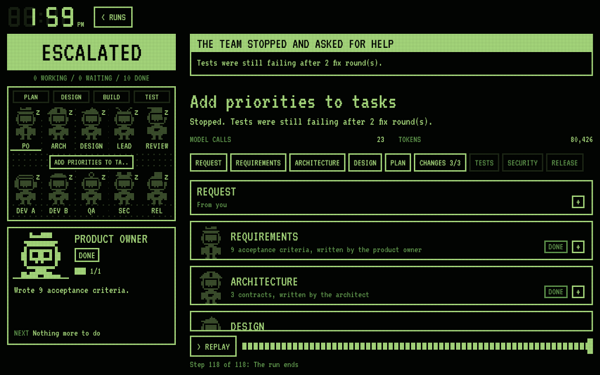
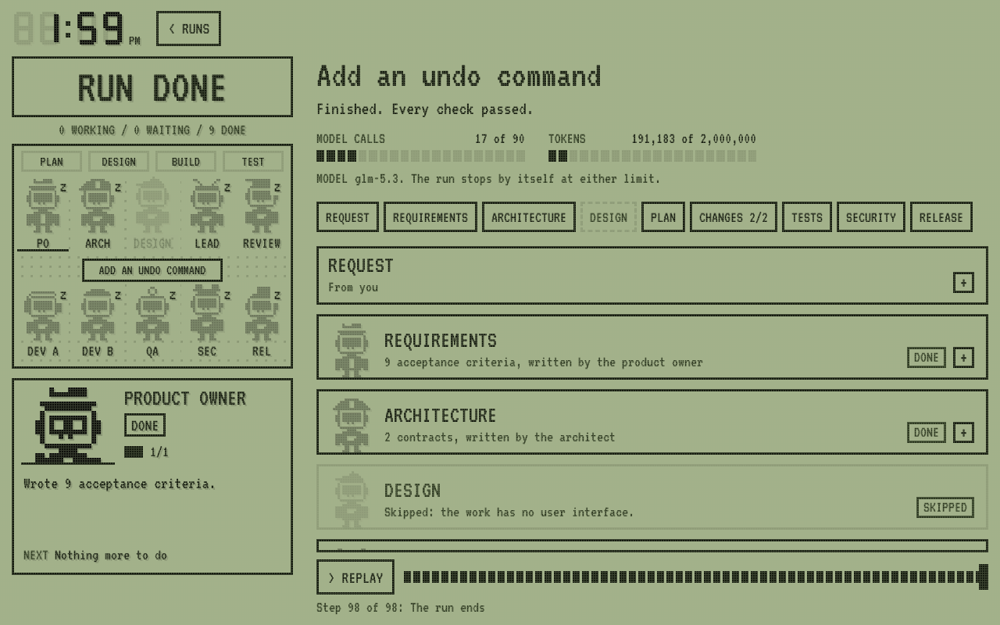
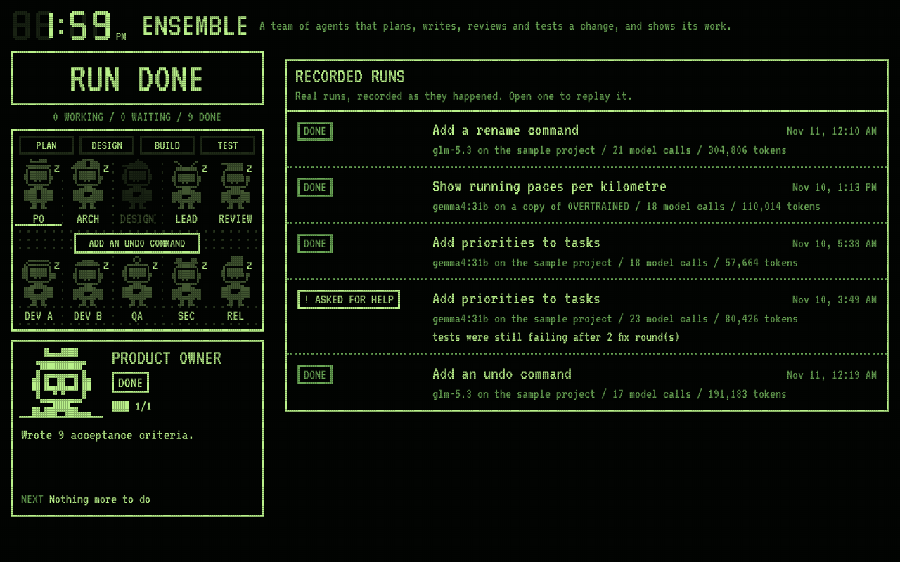
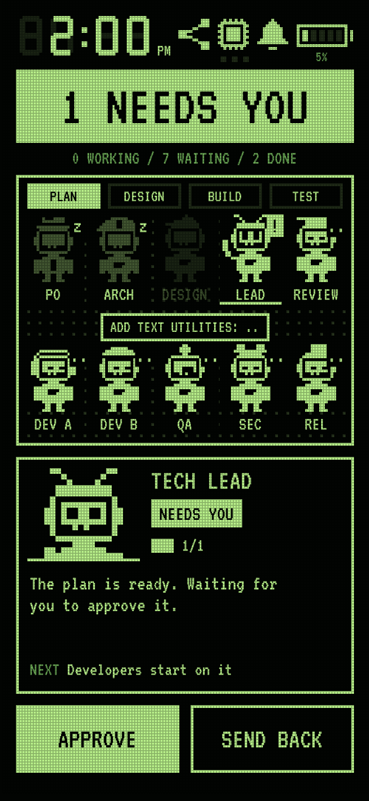
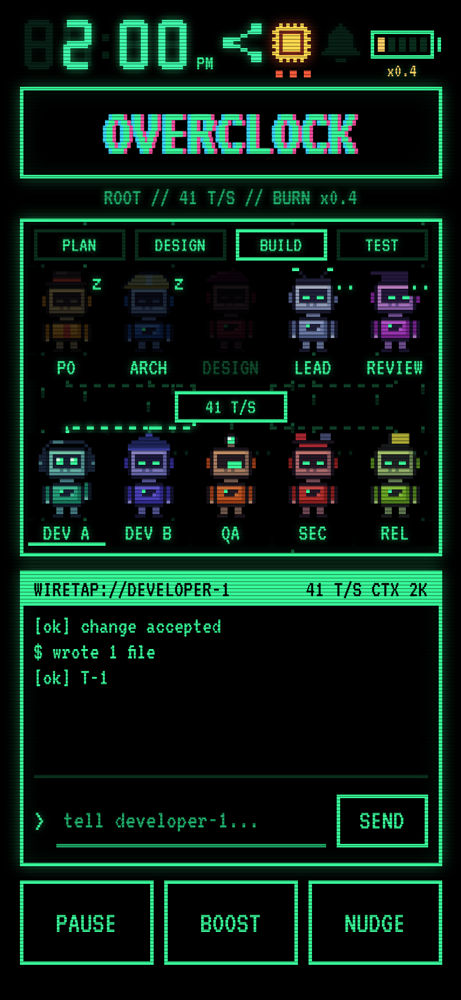

Ensemble
A team of AI agents that writes software and isn’t allowed to grade its own work
Ensemble takes a request for a change to a codebase and hands it to a team of agents: a product owner, an architect, a designer, a tech lead, two developers, a reviewer, a QA engineer, a security reviewer and a release engineer, each a model with one job. What comes back is a tested, reviewed change, ready to open as a draft pull request. The agents don’t decide how the work goes. The process is a pipeline written in code, and they fill in its stages: every handoff is a typed document checked before anything builds on it, no change lands until it has passed review, the tests are run by the harness and never reported by a model, and nothing is written until a person approves the plan.
I wrote the orchestrator myself and used no agent framework, because the questions I care about are decided there: what an agent may do, who checks whose work, what happens when a model is confidently wrong, and what a run may spend. A run is an append-only log, and every screen is worked out from the events so far. That is why a finished run plays back like a recording, and why a run that was stopped, or was going when the app closed, picks up where its log ends. It’s in progress. Since the runs on this page were recorded, it has learned to read a project in a dozen languages and map its code before the team begins, to give a small job to one developer and a reviewer, to try each change at a desk before a reviewer reads it, and to open a finished run as a draft pull request on a fork. Those parts are built and tested with scripted replies and stand-ins, and wait for their first run with a real model and against GitHub itself.
- Built with
- TypeScript, Node, React, Vite and Vitest, with no agent framework
- Models
- Whatever Ollama serves, in the cloud or on the machine; measured here with glm-5.3 and gemma4:31b
- Isolation
- bubblewrap on Linux and the system sandbox on macOS, each put to the test on the machine before it is trusted
- Runs on
- One computer, or a small private server only its owner’s devices can reach
- Status
- In progress, with the repository private for now
Three of the recorded runs
-
The tests were wrong
A request to add a rename command to a small sample project, with glm-5.3. QA writes its tests from the acceptance criteria and never sees the code. Four of the 25 tests failed. The tech lead, who is shown the tests, the code and the output together, found the tests at fault: they matched an error message with a pattern that could not match. QA rewrote them, and all 25 passed.
21 model calls, 304,806 tokens. Scored afterwards by 3 checks the team never saw; all passed.
Replay the rename run -
The code was wrong
The same team on a copy of 0VERTRAINED, my own app, with gemma4:31b: let callers ask for running paces per kilometer. The harness ran the app’s own test suite, and one new test failed. This time the tech lead sent it to the developer: a function took the text “483” for a number, which the requirements ruled out. The fix was reviewed, and all 172 test files passed.
18 model calls, 110,014 tokens. Nothing was pushed to the app’s repository.
Replay the run on 0VERTRAINED -
It asked for help
The first run on a project that already had code, with gemma4:31b. The tests failed three times, the rounds of fixes ran out, and the run stopped and said so. Every loop in the pipeline has a limit, and running out of one goes to a person instead of round again.
23 model calls, 80,426 tokens. Why it failed is the lesson below.
Replay the run that asked for help
Each is a log from a GitHub runner, played back by the same app with no server behind it. Download the logs: the rename run, the run on 0VERTRAINED, the run that asked for help, the same request two hours later and a run where nothing went wrong.
The product

Nothing is written until a person approves the plan. The tech lead waves, and the headline says someone needs you. 
After a failed test run, the tech lead judges each failure. Here the test is wrong, and it says why. 
What the harness did itself is kept apart from what the agents wrote: here, two replies sent back for describing files their authors had not read. 
A run that could not finish says so first, with the reason. 
The same display, dark on light. One ink in either: things differ by being lit, half lit, unlit or inverted. 
Every run is kept as its log, so any of them can be opened and played back.


- The monitor
- The team’s room by itself on one fixed screen, made for a phone left on a stand. One line says whether anyone needs you, and while a plan waits the two keys answer it.
- Overclock
- The controls of a person running the team: hold one agent before its next call, move it to a heavier model, or leave it a note it reads from then on. Every command is written to the run’s log and shows in the replay.
The desktop screens are from the recorded runs. The two phone screens are from the app’s scripted demo, which needs no model.
- Typed handoffs
- Agents exchange documents, not chat. Each is checked against a schema and the rules of its stage, and a rejected one goes back to its author with the exact errors, a limited number of times.
- Plans checked in code
- A dependency cycle, an acceptance criterion no task covers, or two parallel tasks that own the same file rejects the plan before a person is asked about it.
- Independent tests
- QA writes tests from the acceptance criteria with the implementation kept out of its context. When they fail, the tech lead, who sees both sides, decides whether the code or the test is wrong. A small job gives this up, and its pull request says so.
- Least privilege
- Each role’s capabilities are checked in code. A developer writes only the files its task owns, QA only under the test folder, and nobody touches CI workflows or files that usually hold credentials. Only a developer can run a command, and only at a desk of its own: a copy of the project that is thrown away afterward.
- Shut in
- Where the machine has a sandbox, installing the project, the tests a model wrote and a developer’s own commands all run inside it: no network except to install, no view of the home folder or the saved key, and a cap on processes. Without one, a developer is offered no commands at all.
- Bounded
- Every loop has a limit and every run a ceiling on model calls and tokens, checked before each call. A day has a ceiling too, in dollars and in tokens.
How it’s checked
| What was measured | Result |
|---|---|
| Benchmark tasks solved with glm-5.3, each scored by checks the team never sees | 7 of 7, on 27 of 27 checks |
| The same benchmark with gemma4:31b | 4 of 7, on 18 of 27 checks |
| Runs the team called a success that then failed a hidden check, across both | 0 of 11 |
| Planted defects the reviewer caught and named, in two measurements | 30 of 30 |
| Correct changes the reviewer wrongly sent back, in the same two | 0 of 9, then 3 of 9 |
| Scripted runs cut off after each of their events, then continued from the log, that ended as the uncut run did | 216 of 216 |
| Attempts to read, write or reach out from inside the macOS sandbox that went the way they should | 35 of 35 |
| Requests that found the right wiki page, searching by words and by meaning, against words alone | 7 of 8, against 5 of 8 |
| Accessibility of the replay, axe-core against WCAG 2.2 AA, both color schemes, phone and desktop | 0 violations on 40 screens |
| Automated tests | 960 |
The benchmark is small: seven tasks, six of them on one project of about a hundred lines. It can tell a model that fails from one that copes, not rank two that both cope. The three changes wrongly sent back were one case, three times: its criterion left a limit of zero open, and it has been tightened since and not measured again. Beside the pipeline there is an aide to talk an idea through, a wiki it keeps and the team is handed pages from, and skills it writes down for itself; those have been tried with scripted replies and recorded embeddings, not yet with a live model.
The tools nobody used
The first time I pointed the team at a project that already had code, I had just given the agents tools to look at it: list the files, read one, search. The model used none of them. The architect described two functions the code didn’t have, the developers built on that, the tests failed three times, and the run asked for help. Its log holds 23 model calls and not one look at the code.
Asking more firmly in the prompt would have been a hope. So the harness checks instead: a design that names existing files its author hasn’t read is sent back with those files attached, and QA is shown the existing tests before its own are accepted. Less than two hours later the same request went to the same model. The harness sent back two replies, five files were read, and all 16 tests passed. Both runs are in the replay: the one that asked for help and the one after the change.